Clash of Clans Buildings
Updated: 26 August 2026 · By the Goblins Farm team

Every Home Village building, 41 in total, with the full level table for each one, read from the game files.
Army Buildings
 Army Camp14 levels, from TH1
Army Camp14 levels, from TH1
 Barracks19 levels, from TH1
Barracks19 levels, from TH1
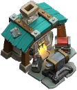
Blacksmith10 levels, from TH8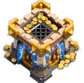
Clan CastleThe only building that fights back and chases you. Dark Barracks13 levels, from TH7
Dark Barracks13 levels, from TH7
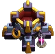
Dark Spell Factory8 levels, from TH8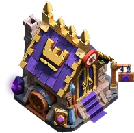
Hero HallWhere heroes and their equipment are managed. LaboratoryResearch applies to every future attack, forever. Never leave it idle.
LaboratoryResearch applies to every future attack, forever. Never leave it idle.
 Pet House12 levels, from TH14
Pet House12 levels, from TH14
 Spell Factory9 levels, from TH5
Spell Factory9 levels, from TH5
 Workshop9 levels, from TH12
Workshop9 levels, from TH12
Defenses
 Air DefenseThe building that decides whether air attacks work on your base.
Air SweeperDeals no damage. Pushes air troops backwards, which is often better.
Air DefenseThe building that decides whether air attacks work on your base.
Air SweeperDeals no damage. Pushes air troops backwards, which is often better.
 Archer TowerHits both air and ground, which makes it the most flexible early defence.
Archer TowerHits both air and ground, which makes it the most flexible early defence.
 Bomb TowerGround splash that explodes again when destroyed.
Bomb TowerGround splash that explodes again when destroyed.
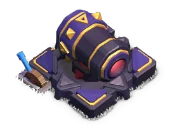
CannonGround only, single target, and the first defence you ever build. Crafting Station1 level, from TH17
Crafting Station1 level, from TH17
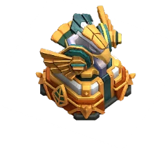
Eagle ArtilleryCovers almost the whole base, once it wakes up. Firespitter16 tiles of range and heavy damage. Reach is the whole point.
Firespitter16 tiles of range and heavy damage. Reach is the whole point.
 Hidden TeslaInvisible until it fires, which is worth more than its damage.
Hidden TeslaInvisible until it fires, which is worth more than its damage.
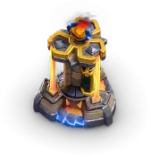
Inferno TowerTwo modes: burn one thing to ash, or sweep a crowd. MonolithPunishes exactly the units you brought to tank for everyone else.
MonolithPunishes exactly the units you brought to tank for everyone else.
 MortarGround splash damage, with a blind spot right underneath it.
MortarGround splash damage, with a blind spot right underneath it.
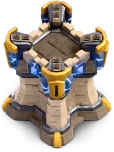
Multi-Archer TowerShoots several things at once instead of one thing hard. Multi-Gear TowerLong reach, high damage, both movement types. A genuine all-rounder.
Multi-Gear TowerLong reach, high damage, both movement types. A genuine all-rounder.
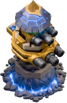
Revenge TowerA Town Hall 18 defence whose damage number does not tell the story. Ricochet CannonA cannon whose shot carries on to a second target.
Ricochet CannonA cannon whose shot carries on to a second target.
 ScattershotHeavy splash that punishes any army travelling in a group.
ScattershotHeavy splash that punishes any army travelling in a group.
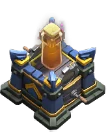
Spell TowerA defence that casts a spell at your army instead of shooting it.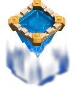
Super Wizard TowerTwo Wizard Towers merged into one much angrier building. Wizard TowerSplash damage that hits air as well as ground.
Wizard TowerSplash damage that hits air as well as ground.
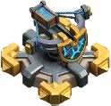
X-BowLong range, rapid fire, and a targeting mode you have to choose.Other Buildings

Resource Buildings
 Dark Elixir Drill11 levels, from TH7
Dark Elixir Drill11 levels, from TH7
 Dark Elixir Storage13 levels, from TH7
Dark Elixir Storage13 levels, from TH7
 Elixir Collector17 levels, from TH1
Elixir Collector17 levels, from TH1
 Elixir Storage19 levels, from TH1
Elixir Storage19 levels, from TH1
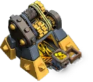
Gold Mine17 levels, from TH1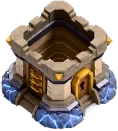
Gold Storage19 levels, from TH1Walls
Goblins Farm is not affiliated with, endorsed by, sponsored by, or specifically approved by Supercell. Clash of Clans is a trademark of Supercell Oy. This material is unofficial fan content produced under Supercell's Fan Content Policy. Game values change with every update; always verify in-game before committing an upgrade.